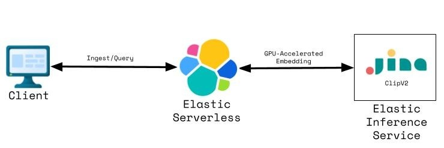
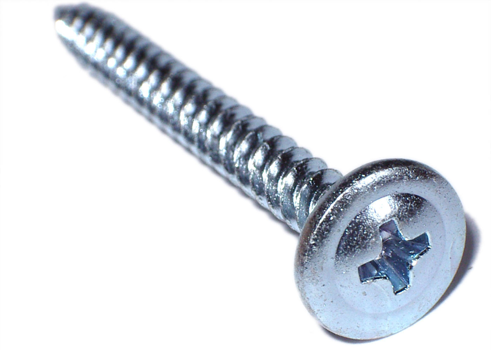
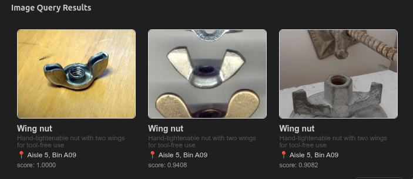
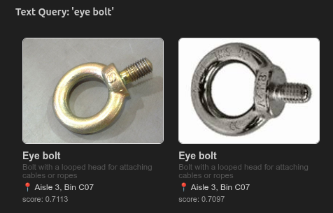

Multi-Modal Search with
Jina ClipV2 on EIS
Hardware Store Product Search Demo
The Problem
- Customers describe products in words or snap a photo
- Traditional search handles one modality, not both
- Goal: match text queries AND image queries to the same product catalog
Why Multi-Modal Embeddings?
→
Shared
Vector Space
1024 dims
←
- CLIP models map text & images into a shared vector space
- Cosine similarity works across modalities
- Jina ClipV2 — 1024-dim, multilingual
Architecture Overview

Client ← Ingest/Query → Elastic Serverless ← GPU Embedding → EIS (Jina ClipV2)
No self-hosted GPU infra required — EIS handles it
Infrastructure as Code
- Elastic Serverless project provisioned via Terraform
- Jina ClipV2 inference endpoint (
.jina-clip-v2) available by default
- Reproducible, teardown-friendly demo environment
terraform init → terraform apply → .env with credentials
terraform init
→
terraform apply
→
.env with credentials
The Dataset
Synthetic hardware store catalog — fasteners from Wikimedia Commons
with generated product metadata (name, description, aisle, bin)

Phillips Screw
Index Schema
Elasticsearch index with dense_vector field (1024 dims, cosine)
{
"mappings": {
"properties": {
"embedding": { "type": "dense_vector", "dims": 1024,
"similarity": "cosine" },
"name": { "type": "text" },
"description": { "type": "text" },
"aisle": { "type": "keyword" },
"bin": { "type": "keyword" },
"image_path": { "type": "keyword" }
}
}
}
Ingestion Pipeline
es.inference.inference(
inference_id=".jina-clip-v2",
body={
"input": [{
"content": {
"type": "image",
"format": "base64",
"value": data_uri
}
}]
}
)
- For each product: read image → base64 → EIS → store embedding + metadata
elasticsearch.helpers.bulk for efficient indexing
Image File
→
Base64
→
EIS Embedding
→
Elasticsearch Bulk Index
Demo: Image Search
Query: upload wing_nut_1.jpg → base64 → EIS embedding → kNN (k=3)

Key: Visual similarity matching works without any text metadata
Demo: Text Search (Cross-Modal)
Query: "eye bolt" — text embedding compared against image embeddings

Key: The model bridges the semantic gap between language and vision
In-Store Product Finder
A real-world application of the same CLIP pipeline
- Customer describes it ("bolt with a loop on top") or snaps a photo
- Customer's phone app sends query through the CLIP pipeline
- Returns product match with exact in-store location — aisle and bin
Customer
→
[Photo or Text]
→
EIS (Jina ClipV2)
→
kNN Search
→
Aisle & Bin
Store App: Data Model & Experience
Extended schema + filtered kNN (in-stock only)
{
"knn": {
"field": "embedding",
"query_vector": "<embedding>",
"k": 5,
"num_candidates": 50,
"filter": {
"term": { "in_stock": true }
}
}
}
1
Capture
Photo or text via app
3
Search
Filtered kNN match
4
Navigate
Aisle & bin location
Wing Nut, 1/4"-20 Zinc
SKU: HW-FAS-4421 · $0.38
Aisle 4 · Bin 2C
In Stock (47 remaining)
Why This Beats Traditional Search
Keyword Search
- Customer doesn't know it's called a "wing nut"
- Exact term match required
Category Browsing
- Too many fastener sub-categories
- Requires domain knowledge
Visual Search
- Photo-to-product match is instant
- Requires zero domain knowledge
Cross-Modal Fallback
- Blurry photo? Describe it: "butterfly-shaped nut"
- Same index serves both modalities
What's Next
Hybrid Search
Combine BM25 lexical + vector similarity via Elasticsearch RRF
Filtered kNN
Restrict vector search by aisle, category, or price range
Multi-Field Embeddings
Embed product descriptions alongside images for richer recall
Production Hardening
Async ingestion, monitoring, A/B evaluation of search quality
Multi-Store Federation
Inventory federation across store locations
Personalization
Purchase history re-ordering and recommendations